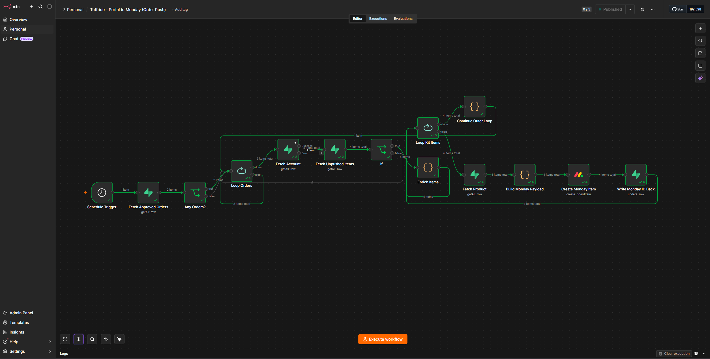
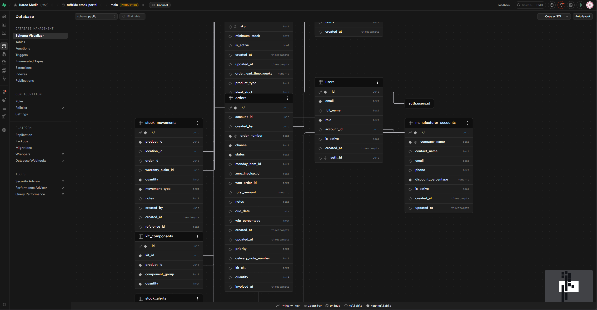

Case Study
A centralised stock management system connecting Xero, Monday.com, and WooCommerce for an Australian suspension kit manufacturer. 970+ products across 3 warehouse locations.
Overview
An Australian suspension kit manufacturer needed to move from spreadsheet-based stock tracking to a centralised operations portal. Stock was managed across three physical warehouse locations with no single source of truth. Orders came in via email and phone, production was tracked on Monday.com with no connection to the ordering system, and invoices were created manually in Xero.
We built a custom React-based portal that connects their eCommerce store, accounting system, production tracker, and warehouse operations into one system.
The challenge
What we built
Key numbers


The approach
Technologies
Start a project
Tell us what you're managing manually. We'll map the system and show you what's possible.